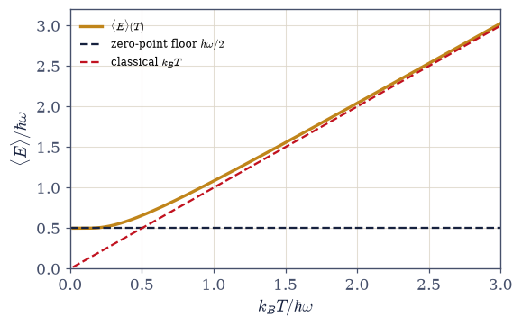
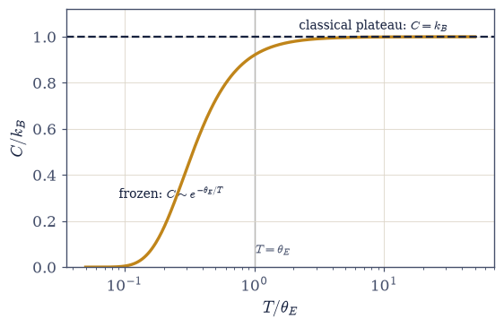
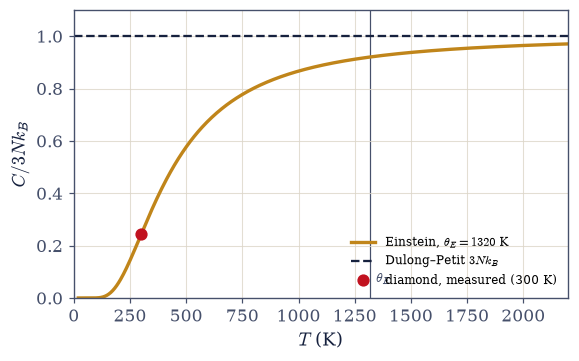
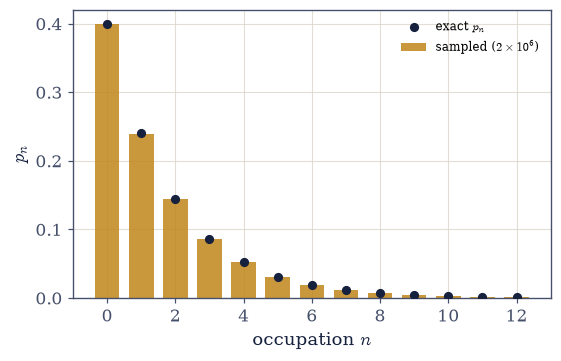
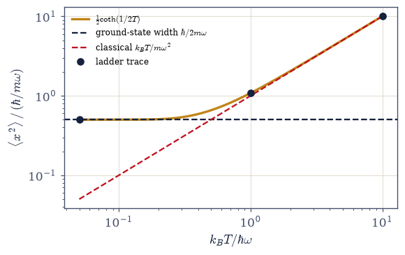

7.5 The Quantum Oscillator at Temperature: Planck’s Occupation, Freezing Out, and the Classical Limit#
Notebook overview#
This notebook does the volume’s founding calculation: the one Planck performed in 1900 to fit the blackbody spectrum, and the one Einstein pointed at solid matter in 1907. The system is the harmonic oscillator of §6.12 (the ladder spectrum \(E_n = \hbar\omega(n + \tfrac12)\)), placed in contact with a heat bath by the machinery of §7.4. It is exactly solvable: the partition function is a geometric series, so every claim made here is verified to machine precision rather than estimated, and one warm oscillator turns out to contain a remarkable fraction of the volume in miniature.
The haul, in order. The exact \(Z\) delivers \(\langle E\rangle = \hbar\omega(\langle n\rangle + \tfrac12)\) with the Planck occupation \(\langle n\rangle = 1/(e^{\beta\hbar\omega}-1)\) — and the reader should recognize it: this is the Bose–Einstein function at \(\mu = 0\), appearing one movement before §7.7 derives it from the grand canonical ensemble. No accident: a bosonic mode is a harmonic oscillator, its quanta the rungs of the ladder. Movement I thereby completes a quiet symmetry — the warm qubit of §7.4 produced the Fermi function, this notebook’s warm oscillator produces the Bose function, each from a single exactly-solvable system, and the ensemble derivation of §7.7 (plus the Matsubara contours of §7.2) must land on the same two functions. The heat capacity then tells the volume’s second “where classical failed” story quantitatively: below the Einstein temperature \(\theta_E = \hbar\omega/k_B\) the oscillator freezes out — equipartition’s guaranteed \(k_B\) simply switches off — and above it the classical answer returns. The classical limit is made honest twice over: the high-temperature limit of the quantum \(Z\) derives the \(1/h\) that Volume V inserted into its phase-space measure by fiat, and the leading quantum correction \((\hbar\omega)^2/12k_BT\) is measured converging — the first term of the Wigner expansion. Scaled up to \(3N\) oscillators, the Einstein solid closes the nineteenth century’s diamond scandal to three digits and then fails, honestly, in exactly the way that makes Debye (§7.16) necessary.
Two payload exercises plant seeds. The oscillator’s thermal number distribution is geometric, and two million samples of it exhibit bunching — the super-Poissonian variance \(\langle\Delta n^2\rangle = \langle n\rangle(1 + \langle n\rangle)\) whose \(+\langle n\rangle^2\) excess Einstein read, in 1909, as the wave half of wave–particle duality: the photon gas of §7.14 begins here. And the thermal width \(\langle x^2\rangle = (\hbar/2m\omega)\coth(\beta\hbar \omega/2)\), computed by ladder-operator trace machinery, traces the full arc from the pure ground-state spread (a quantum width that never freezes) to classical equipartition growth — flagged now as the exact curve that path-integral Monte Carlo (§7.21) will re-derive by sampling classical ring polymers. Molecules are deliberately deferred to §7.6, coupled oscillators to §7.16.
Conventions (this notebook). Working units \(\hbar = \omega = k_B = 1\) (so \(\beta = 1/T\), the level spacing is \(1\), and \(\theta_E = 1\)), with physical units restored where the physics demands them — the Einstein-solid section speaks Kelvin and J mol⁻¹K⁻¹. Truncated spectral sums always state their \(n_{\max}\), governed by the rule \(n_{\max} \gg k_BT/\hbar\omega\): the truncation trap bites at high temperature, not low. Planck denominators are evaluated with
numpy.expm1to dodge catastrophic cancellation at small \(\beta\hbar\omega\). Random sampling uses a fixed seed.How to read the checks. Each exercise closes with a
validatecall against an independent fact: the geometric-series \(Z\) against brute-force truncated sums (and the stated failure of an undersized \(n_{\max}\)); \(-\partial\ln Z/\partial\beta\) against \(\hbar\omega(n_B + \tfrac12)\) by central differences; the frozen and classical heat-capacity values at \(0.1\,\theta_E\) and \(50\,\theta_E\) with the exponential law fitted on a log axis; the \(1/h\) measure derived from the high-\(T\) ratio and the Wigner correction converging to \(1\); the diamond number against the measured \(0.245\); two million geometric samples against the exact mean and bunched variance (cross-checked by \(\partial^2\ln Z/\partial\beta^2\)); and the ladder-trace \(\langle x^2\rangle\) against the \(\coth\) closed form at three temperatures. A ✓ is strong evidence; a ✗ is a prompt to locate the discrepancy.Scope. One oscillator (and \(3N\) independent copies of it), exactly. Molecules and their staircase are §7.6; the ensemble derivations of \(n_B\)/\(n_F\) are §7.7; the photon gas is §7.14; coupled oscillators and the Debye spectrum are §7.16 (motivated here, not built); the path-integral resampling of today’s \(\langle x^2\rangle\) is §7.21. See Pathria & Beale (Ch. 7); Kittel, Introduction to Solid State Physics (the Einstein and Debye models and the diamond data); Planck (1900) and Einstein (1907), the historical seeds; Mandel & Wolf on photon statistics. Cross-reference §6.12 (the ladder spectrum and operators, reused wholesale), §7.4 (the canonical identities and the \(n_F\) twin), §7.2 (the Matsubara route), §5.5/§5.6 (equipartition and the classical measure, about to be derived).
Theory in brief#
The exact partition function#
The oscillator’s spectrum is the ladder \(E_n = \hbar\omega(n + \tfrac12)\), \(n = 0, 1, 2, \dots\) (§6.12), so the canonical sum is geometric:
The first equality pulls out the zero-point factor and sums the geometric series in \(e^{-\beta\hbar\omega}\); the \(\sinh\) form is the same expression folded symmetrically. Because the series is infinite, any truncated check must respect the convergence rule \(n_{\max} \gg k_BT/\hbar\omega\) — the occupied rungs reach up to \(n \sim k_BT/\hbar\omega\), so the truncation trap bites at high temperature, where intuition least expects it. Free energy and entropy follow from the identities of §7.4, and \(S \to 0\) as \(T \to 0\): the third law holds on an infinite spectrum exactly as it did on two levels.
The Planck occupation, and the movement’s symmetry#
One derivative generates the physics:
The \(\tfrac12\) is the zero-point energy of §6.12, now a thermodynamic floor that survives at \(T = 0\). And \(\langle n\rangle\) deserves a long look: it is the Bose–Einstein function \(n_B(\hbar \omega)\) at \(\mu = 0\), one movement before its official derivation. The reason is structural, not coincidental: a bosonic mode is a harmonic oscillator, and the number of quanta on the ladder is the mode’s occupation. Movement I has now produced both quantum statistics from single systems (the two-level qubit gave \(n_F\) in §7.4, the oscillator gives \(n_B\)), and when §7.7 derives both from the grand canonical ensemble (and the Matsubara contours of §7.2 are recalled), three independent routes will have converged on the same pair of functions.
Freezing out: where equipartition dies#
Differentiating \(\langle E\rangle(T)\) gives the oscillator’s heat capacity,
and the Einstein temperature \(\theta_E\) splits the world in two. Below it the oscillator is frozen: \(k_BT\) cannot reach the first excited state, the Boltzmann factor strangles every excitation, and \(C \approx k_B x^2 e^{-x}\) dives exponentially. Above it, equipartition returns: \(C \to k_B\), Volume V’s answer. This is the volume’s second “where classical failed” resolution: classical equipartition (§5.5/§5.6) assigns \(k_B\) per oscillator unconditionally, and experiment said otherwise; quantum discreteness switches degrees of freedom off when \(k_BT\) sinks below their quantum. The single number \(\theta_E\) organizes this notebook and the two after it.
The classical limit, made honest twice#
At high temperature the quantum partition function approaches
Volume V’s classical oscillator integral \(\int dp\,dx\,e^{-\beta H}\) equals \(2\pi k_BT/\omega\) — a quantity with dimensions of action, which cannot be a state count as it stands. It becomes one, and matches the quantum limit, only when divided by \(h = 2\pi\hbar\): the \(1/h\) that Volume V inserted by convention is thereby derived as the unique normalization under which classical statistical mechanics is the high-temperature limit of quantum statistical mechanics. (The measure’s other mystery factor, the \(1/N!\), is derived the same way in §7.8.) The approach to the limit is itself measurable: expanding \(x/(e^x-1)\) gives \(\langle E\rangle = k_BT + (\hbar\omega)^2/12k_BT + \dots\), and the normalized correction \((\langle E\rangle - k_BT)\cdot 12k_BT/(\hbar\omega)^2 \to 1\) — the leading term of the Wigner expansion, the systematic \(\hbar^2\) bookkeeping of the quantum–classical borderland.
The Einstein solid and the diamond anomaly#
Einstein’s 1907 move: model a crystal of \(N\) atoms as \(3N\) independent oscillators at one frequency \(\omega_E\),
At high temperature this is the Dulong–Petit law \(C = 3Nk_B \approx 24.9\) J mol⁻¹K⁻¹, which nineteenth-century calorimetry confirmed for most solids at room temperature. Diamond was the scandal: its room-temperature heat capacity is a quarter of the law’s value. Einstein’s curve resolves it: light atoms and stiff bonds give diamond \(\theta_E \approx 1320\) K, so room temperature sits deep in the frozen regime, and the model predicts \(C/3Nk_B = 0.244\) at 300 K against the measured \(\approx 0.245\) — a sixty-year-old anomaly closed to three digits. The model also fails honestly: at low \(T\) its exponential tail collapses far below the observed \(T^3\) law, because independent equal-frequency oscillators all share one gap, while a real crystal’s coupled modes include arbitrarily soft long-wavelength sound that no temperature can freeze. That discrepancy is Debye’s cue (§7.16) — motivated here, not merely announced.
Thermal photon statistics: the geometric distribution and bunching#
The thermal state’s number distribution is the Boltzmann ladder itself,
a geometric distribution on \(n \ge 0\) — samplable directly (with one off-by-one care point:
numpy’s geometric sampler counts trials from \(1\), so \(n = k - 1\)). Its variance exceeds the
Poisson value \(\langle n\rangle\) by \(\langle n\rangle^2\): thermal light is super-Poissonian,
bunched. That excess is precisely the “wave” term of Einstein’s 1909 fluctuation formula, and
the classical face of what Hanbury Brown and Twiss later measured in starlight. The contrast with
Poissonian laser light, and the full photon gas, are §7.14 and the business of §7.15 — this is the seed.
The thermal width: the curve the path integral will resample#
Averaging the eigenstate widths \(\langle x^2\rangle_n = (n + \tfrac12)\hbar/m\omega\) over the Boltzmann populations gives
a single curve running from a quantum floor that never freezes to classical linear growth. We compute it twice — the closed form, and the machine route \(\operatorname{Tr}(\rho\,x^2)\) with the ladder matrices of Volume VI — and flag it explicitly: this is the exact curve that path-integral Monte Carlo (§7.21) will re-derive by Metropolis sampling of classical ring polymers, and the comparison will be that method’s acid test.
Setup#
Conventions and colours only: the working units (\(\hbar = \omega = k_B = m = 1\)), the plotting
palette, and the numerical house rules this notebook obeys (the truncation rule, the expm1
habit, the fixed seed). Every object the notebook is about you build in the exercise that
earns it — the partition function and the Planck occupation in Exercise 1, the heat capacity in
Exercise 3, the thermal sampler in Exercise 6, and the ladder-operator width in Exercise 7.
The Setup below holds this notebook’s data and instruments — nothing you are asked to build. It is collapsed so the building stays yours; expand it whenever you want the details.
Exercise 1 — The exact partition function#
Planck’s geometric series — the volume’s founding calculation, done in closed form and checked against brute force, with the truncation trap demonstrated where it actually bites. Cite Eq. 697.
Two numerical house rules govern everything that follows. A truncated spectral sum converges only
when \(n_{\max} \gg k_BT/\hbar\omega\), because the occupied rungs reach up to \(n \sim
k_BT/\hbar\omega\): the truncation trap bites at high temperature, where intuition least expects
it. And Planck denominators are evaluated with numpy.expm1, which returns \(e^x - 1\) without the
catastrophic cancellation that a naive numpy.exp(x) - 1 suffers at small \(x\), where the result
is \(\sim x\) and the subtraction throws away most of its digits.
The thermodynamics rides on the identities of §7.4: \(F = -k_BT\ln Z\) and \(S = (\langle E\rangle - F)/T\), with \(\langle E\rangle = \hbar\omega(\langle n\rangle + \tfrac12)\) — the closed form Exercise 2 re-derives by differentiation, taken here on trust so that the third law can be tested on an infinite spectrum straight away.
Derive \(Z = e^{-\beta\hbar\omega/2}/(1-e^{-\beta\hbar\omega}) = 1/(2\sinh(\beta\hbar\omega/2))\) by summing the geometric series over \(E_n = \hbar\omega(n+\tfrac12)\).
Write
Z_oscillator(beta, n_max=None): the closed-form \(1/(2\sinh(\beta\hbar\omega/2))\) whenn_maxisNone, and the brute-force truncated sum \(\sum_{n=0}^{n_{\max}} e^{-\beta\hbar\omega(n+\frac12)}\) otherwise.Confirm the two routes agree to at least eight digits at \(\beta = 2\) (\(n_{\max} = 60\)) and \(\beta = 0.2\) (\(n_{\max} = 400\)).
Demonstrate the truncation rule: show \(n_{\max} = 60\) failing the eight-digit standard at \(\beta = 0.2\), the hot case.
Write
planck_occupation(beta), the occupation \(\langle n\rangle = 1/(e^{\beta\hbar\omega}-1)\) that Exercise 2 will identify, withnumpy.expm1in the denominator.Compute \(F(T)\) and \(S(T)\) and confirm \(S \to 0\) as \(T \to 0\): the third law holding on an infinite spectrum, not just the two levels of §7.4.
β = 2.0: closed = 0.425459064120 truncated(60) = 0.425459064120
β = 0.2: closed = 4.991676378648 truncated(400) = 4.991676378648
β = 0.2 truncation: n_max = 60 → rel. error 5.0e-06 (FAILS 1e-8)
n_max = 400 → rel. error 3.6e-16
rule: n_max >> k_BT/ħω — the trap bites at HIGH temperature
T = 0.05: F = 0.50000 S = 4.328e-08
T = 0.20: F = 0.49865 S = 4.068e-02
T = 1.00: F = 0.04132 S = 1.041e+00
T = 5.00: F = -8.03886 S = 2.611e+00
S(T → 0) → 0 and F(T → 0) → E_0 = 1/2: the third law on the infinite ladder
Validation 1#
✓ the oscillator partition function: geometric series, verified by brute force at both regimes [max|Δ| = 1.77636e-15 (rtol=1e-08, atol=1e-09)]
✓ the truncation rule n_max >> k_BT/ħω: n_max = 60 fails at β = 0.2, n_max = 400 does not [errors 5.0e-06 vs 3.6e-16]
✓ S → 0 and F → E_0 = ħω/2 as T → 0: the third law on an infinite spectrum [S(0.05) = 4.3e-08, F(0.05) = 0.500000]
True
Exercise 2 — The Planck occupation: the Bose function, one movement early#
One derivative of \(\ln Z\), and the second of the two quantum statistics appears. Cite Eq. 698.
Compute \(\langle E\rangle = -\partial\ln Z/\partial\beta\) by central differences (step \(10^{-6}\)) and confirm it equals \(\hbar\omega(\langle n\rangle + \tfrac12)\) with \(\langle n\rangle = 1/(e^{\beta\hbar\omega}-1)\) — the
planck_occupationyou wrote in Exercise 1 — to at least eight digits.Identify the two pieces: the zero-point floor \(\hbar\omega/2\) — present at \(T = 0\), the ground energy of §6.12 now thermodynamic — and the thermal occupation \(\langle n\rangle\).
Recognize \(\langle n\rangle\) as the Bose–Einstein function \(n_B(\hbar\omega)\) at \(\mu = 0\), and explain why: a bosonic mode is an oscillator, its quanta the rungs.
Pair with §7.4 in prose: the qubit produced \(n_F\), the oscillator produces \(n_B\) — both statistics have now appeared from single exactly-solvable systems, and the ensemble derivation of §7.7 (plus the Matsubara contours of §7.2) must land on the same functions.
β = 1.3: −∂lnZ/∂β = 0.8746305204
ħω(⟨n⟩ + ½) = 0.8746305205 (⟨n⟩ = 0.3746305205)
zero-point floor: 0.5 ħω (temperature-independent)
thermal part at β = 1.3: ħω⟨n⟩ = 0.374631

Fig. 635 The warm oscillator’s energy. \(\langle E\rangle(T) = \hbar\omega(\langle n\rangle + \tfrac12)\) (amber) between its two truths: the zero-point floor \(\hbar\omega/2\) (dark dashed), which survives at \(T = 0\) because the ground state’s spread is quantum, not thermal, and the classical asymptote \(\langle E\rangle = k_BT\) (red dashed), equipartition’s \(\tfrac12 k_BT\) per quadratic term, which the curve joins once \(k_BT \gg \hbar\omega\) blurs the ladder into a ramp. The gap between curve and asymptote at intermediate \(T\) is the \((\hbar\omega)^2/12k_BT\) Wigner correction that Exercise 4 measures. The occupation \(\langle n\rangle = 1/(e^{\hbar\omega/k_BT}-1)\) riding underneath is the Bose–Einstein function at \(\mu = 0\), one movement before its ensemble derivation (§7.7).#
Validation 2#
✓ ⟨E⟩ = −∂lnZ/∂β = ħω(n_B + ½): the Planck occupation, by central differences [got 0.874631 vs expected 0.874631 (rtol=1e-08, atol=1e-09)]
✓ the expm1-safe occupation equals the textbook form where both are accurate [max|Δ| = 0 (rtol=1e-12, atol=1e-09)]
True
Exercise 3 — Freezing out#
The heat capacity’s cliff — where equipartition dies, and the temperature scale that organizes three notebooks. Cite Eq. 699.
The stability rewrite matters here. Written out naively, \(x^2e^x/(e^x-1)^2\) loses its digits at
small \(x\) — exactly where the answer must approach the classical \(C/k_B \to 1 - x^2/12\) — because
the denominator \(e^x-1\) cancels catastrophically. Reaching \(e^x\) through numpy.expm1 instead,
so that with \(u = \mathrm{expm1}(x)\) the formula reads \(x^2(u+1)/u^2\), keeps full accuracy in that
limit and underflows benignly to zero in the frozen regime \(x \gg 1\).
Derive \(C(T) = k_B\,x^2e^x/(e^x-1)^2\) from \(\langle E\rangle\).
Write
heat_capacity(x)for that expression at \(x = \beta\hbar\omega\), in thenumpy.expm1form above. Write this one yourself — the implementation is the lesson.Evaluate across \(T/\theta_E = 0.1\) to \(50\) and confirm the two regimes: \(C/k_B = 0.0045\) at \(0.1\,\theta_E\) (frozen) and \(0.9997\) or better at \(50\,\theta_E\) (classical).
Show the low-\(T\) law is exponential, \(C \approx k_B x^2 e^{-x}\), by fitting the slope of \(\ln(C/x^2)\) against \(x\) with
numpy.polyfit(expect \(-1\)), and explain the gap’s role: no thermal energy, no accessible excited state, no heat absorbed.State the resolution (prose): Volume V’s equipartition assigns \(k_B\) per oscillator unconditionally; quantum discreteness switches oscillators off below \(\theta_E\) — the volume’s second “where classical failed” entry, and the switch that builds the staircase of §7.6.
C/k_B at T = 0.1 θ_E: 0.0045 (frozen: the gap starves the oscillator)
C/k_B at T = 50 θ_E: 0.999967 (equipartition recovered)
log-fit slope of ln(C/x^2) vs x on x ∈ [8, 16]: -1.00005 (expected −1)

Fig. 636 Freezing out: where equipartition dies. The oscillator heat capacity \(C(T)/k_B = x^2e^x/(e^x-1)^2\), \(x = \theta_E/T\), across three decades of temperature (log axis): frozen below the Einstein temperature (the exponential cliff \(C \approx k_B x^2 e^{-x}\), slope \(-1\) on the fitted log-plot, because \(k_BT\) cannot pay the gap \(\hbar\omega\)), and classical above it, saturating on the equipartition plateau \(C = k_B\) (dashed) that Volume V promised unconditionally. The crossover is organized by the single scale \(\theta_E = \hbar\omega/k_B\). Quantum discreteness acts as a temperature-controlled switch on each degree of freedom: several such switches at different \(\hbar\omega\), flipping in sequence, build the molecular heat-capacity staircase of §7.6.#
Validation 3#
✓ deep freeze at T = 0.1 θ_E: C/k_B ≈ 0.0045, the gap starving the oscillator [got 0.00454041 vs expected 0.0045 (rtol=0.02, atol=1e-09)]
✓ equipartition recovered at T = 50 θ_E: the classical k_B per oscillator returns [got 0.999967 vs expected 1 (rtol=0.001, atol=1e-09)]
✓ the frozen regime is exponential: the fitted slope of ln(C/x^2) vs x is −1 (Boltzmann) [got -1.00005 vs expected -1 (rtol=0.001, atol=1e-09)]
True
Exercise 4 — The classical limit derives h#
Volume V divided phase space by \(h\) on faith; the quantum high-temperature limit supplies the missing derivation — and the approach to the limit is measured, not waved at. Cite Eq. 700.
Show \(Z_q \to 1/(\beta\hbar\omega)\) at small \(\beta\hbar\omega\) and verify the ratio \(Z_q/(k_BT/\hbar\omega) \to 1\) numerically across \(T/\theta_E = 1\) to \(100\), with the
Z_oscillatoryou wrote in Exercise 1.Evaluate Volume V’s classical phase-space integral \(\int dp\,dx\,e^{-\beta H}\) for the oscillator by two
scipy.integrate.quadGaussian factors, and note it has dimensions of action — it cannot be a state count as it stands.Divide by \(h = 2\pi\hbar\) and confirm the match to \(Z_q\) at high \(T\): the \(1/h\) measure is the unique normalization making classical statistical mechanics the high-temperature limit of quantum statistical mechanics — Volume V’s convention, derived.
Extract the approach to the limit: with \(\langle E\rangle\) from your Exercise 1
planck_occupation, verify \((\langle E\rangle - k_BT)\cdot12k_BT/(\hbar\omega)^2 \to 1\), identify the \((\hbar\omega)^2/12k_BT\) term, and name the Wigner \(\hbar^2\) expansion it leads. (Prose + computation.)
Z_q / (k_BT/ħω), the approach to the classical count:
T = 1.0 θ_E: ratio = 0.959517
T = 10.0 θ_E: ratio = 0.999583
T = 100.0 θ_E: ratio = 0.999996
∫dp dx e^(−βH) at T = 100: quad = 628.318531 (2π/β = 628.318531)
dimensions: action — a count it is not, yet
Z_q / [(1/h)∫dp dx e^(−βH)] at T = 100: 0.999996
the Wigner correction, normalized: (⟨E⟩ − k_BT)·12k_BT/(ħω)²
T = 2.0: 0.995858
T = 5.0: 0.999334
T = 20.0: 0.999958
Validation 4#
✓ the 1/h phase-space measure is derived: Z_q meets (1/h)∫dp dx e^(−βH) at high T [got 0.999996 vs expected 1 (rtol=0.0001, atol=1e-09)]
✓ the leading quantum correction (ħω)²/12k_BT, with the next Wigner term visible at T = 2 [max|Δ| = 4.16642e-05 (rtol=0.01, atol=1e-09)]
✓ the approach to the classical count is monotone from below [ratios 0.9595 → 0.999583 → 0.999996]
True
Exercise 5 — The Einstein solid and the diamond anomaly#
A nineteenth-century scandal, closed to three digits — and an honest failure that summons Debye. Cite Eq. 701.
Assemble \(C_{\text{solid}}(T) = 3Nk_B\cdot x^2e^x/(e^x-1)^2\) with \(x = \theta_E/T\) (the
heat_capacityyou wrote in Exercise 3, per mode) and confirm Dulong–Petit (\(C \to 3Nk_B\), i.e. \(24.9\) J mol⁻¹K⁻¹) at high \(T\).With diamond’s \(\theta_E \approx 1320\) K, evaluate \(C/3Nk_B\) at \(300\) K and compare: predicted \(0.244\) vs measured \(\approx 0.245\) (\(6.1\) of \(24.9\) J mol⁻¹K⁻¹) — and explain why diamond (light atoms, stiff bonds → high \(\omega_E\) → frozen at room temperature).
Evaluate the low-\(T\) tail at \(100\) K and \(50\) K and state the failure: experiment shows \(C \propto T^3\), not an exponential dive.
Diagnose in prose: independent equal-frequency oscillators share one gap; a real crystal’s coupled modes include arbitrarily soft long-wavelength sound that no temperature can freeze — the physics Debye (§7.16) supplies.
C/3Nk_B at T = 5000 K (θ_E = 1320 K): 0.9942 (Dulong–Petit)
3R = 24.9 J/(mol K) — the classical plateau in physical units
diamond at 300 K: predicted C/3Nk_B = 0.2436
measured C/3Nk_B ≈ 0.2450 (6.1 of 24.9 J/(mol K))
the sixty-year 'anomaly' closes to three digits — diamond was frozen, not lawless
the low-T tail: C/3Nk_B = 3.2e-04 at 100 K, 2.4e-09 at 50 K
experiment: C ∝ T³ — a power law, not an exponential

Fig. 637 The Einstein solid closes the diamond scandal. The Einstein heat-capacity curve \(C/3Nk_B\) against \(T\) for diamond’s \(\theta_E \approx 1320\) K (amber), with the Dulong–Petit plateau \(C = 3Nk_B\) (dashed) that most 19th-century solids obeyed at room temperature. Diamond’s light atoms and stiff bonds push \(\theta_E\) so high that room temperature (red point: the measured \(C/3Nk_B \approx 0.245\) at 300 K) sits deep in the frozen regime, and the curve passes through the measurement to three digits (\(0.244\) predicted): the famous ‘anomaly’ was freezing out, quantitatively. The failure is equally instructive: below \(\sim100\) K the exponential Einstein tail collapses beneath the observed \(T^3\) law, because a single shared frequency freezes all at once while a real crystal’s coupled modes include arbitrarily soft sound: the missing physics Debye supplies in §7.16.#
Validation 5#
✓ Einstein's resolution of the diamond anomaly: C/3Nk_B = 0.244 predicted at 300 K [got 0.243635 vs expected 0.2436 (rtol=0.01, atol=1e-09)]
✓ the prediction meets the measured 6.1/24.9 ≈ 0.245 to better than a percent [got 0.243635 vs expected 0.24498 (rtol=0.01, atol=1e-09)]
✓ the honest failure: an exponential low-T dive (vs the observed T³) under a correct plateau [C/3Nk_B = 3.2e-04 (100 K), 2.4e-09 (50 K)]
True
Exercise 6 — Thermal photon statistics: the geometric distribution and bunching#
The oscillator’s number statistics, sampled two million times — and found guilty of bunching. Cite Eq. 702.
One index convention stands between the sampler and the physics. numpy’s rng.geometric(p)
counts the trials to first success, \(k = 1, 2, 3, \dots\), while the thermal distribution lives
on \(n = 0, 1, 2, \dots\) — identical shapes, shifted by one. The mapping \(n = k-1\) therefore
belongs inside the sampler, applied once where it can be seen; missing it inflates \(\langle
n\rangle\) by exactly \(1\) with no crash and no warning, and is the classic off-by-one of
thermal-photon sampling.
Derive \(p_n = (1-e^{-x})e^{-nx}\) (geometric on \(n \ge 0\)) from the Boltzmann populations.
Write
sample_photon_number(beta, size, rng), returning occupation numbers \(n \ge 0\): draw fromrng.geometricat success probability \(p = 1-e^{-\beta\hbar\omega}\) (computed as-numpy.expm1(-beta)), then apply the \(n = k-1\) mapping. Write this one yourself — the implementation is the lesson.Sample \(2\times10^6\) values at \(\langle n\rangle = 1.5\) from a seeded
numpy.random.default_rng.Verify the sampled mean against the \(\langle n\rangle\) of your Exercise 1
planck_occupation, and the sampled variance against \(\langle\Delta n^2\rangle = \langle n\rangle(1+\langle n\rangle)\), and cross-check the variance against \(\partial^2\ln Z/\partial\beta^2\) by central second differences.Interpret (prose): the \(+\langle n\rangle^2\) excess over Poisson is bunching — Einstein’s 1909 “wave” fluctuation term, the thermal-light signature Hanbury Brown and Twiss measured — and the contrast with Poissonian laser light is the business of §7.15.
x = βħω = 0.510826 → ⟨n⟩ = 1.500000, ⟨Δn²⟩ = ⟨n⟩(1+⟨n⟩) = 3.750000
2e6 samples: mean = 1.500558 variance = 3.744675
∂²lnZ/∂β² (central 2nd difference) = 3.75000008 (closed form 3.75000000)
Poisson variance at the same mean would be ⟨n⟩ = 1.5000
thermal excess: ⟨Δn²⟩ − ⟨n⟩ = 2.2500 = ⟨n⟩² — bunching

Fig. 638 Thermal number statistics, sampled and exact. The histogram of \(2\times10^6\) geometric samples of the thermal occupation (bars) against the exact distribution \(p_n = (1-e^{-x})e^{-nx}\) (dark points), at \(\langle n\rangle = 1.5\): a monotone geometric ladder: \(n = 0\) is always the most probable occupation of a thermal mode, however bright the mode. The sampled variance \(\langle\Delta n^2\rangle = \langle n\rangle(1+\langle n\rangle) = 3.75\) exceeds the Poissonian \(\langle n\rangle = 1.5\) of a coherent beam at the same mean (the \(+\langle n\rangle^2\) excess): thermal light is bunched, Einstein’s 1909 ‘wave’ fluctuation term and the effect Hanbury Brown and Twiss made into an instrument. The numpy sampler counts trials from \(k = 1\); the \(n = k-1\) mapping is the classic off-by-one of photon sampling, wrapped once inside the sampler.#
Validation 6#
✓ the sampled thermal mean lands on the Planck occupation ⟨n⟩ [got 1.50056 vs expected 1.5 (rtol=0.01, atol=1e-09)]
✓ thermal light is super-Poissonian: ⟨Δn²⟩ = ⟨n⟩(1+⟨n⟩), sampled at 2e6 shots [got 3.74467 vs expected 3.75 (rtol=0.01, atol=1e-09)]
✓ the thermodynamic route agrees: ∂²lnZ/∂β² = ⟨Δn²⟩ by central second differences [got 3.75 vs expected 3.75 (rtol=1e-05, atol=1e-09)]
True
Exercise 7 — The thermal width: the curve the path integral will resample#
\(\langle x^2\rangle(T)\) computed by trace machinery, from quantum floor to classical growth — and flagged as a promise to a method four notebooks away. Cite Eq. 703.
The machine route reuses Volume VI’s ladder construction wholesale (§6.12): in the truncated number basis \(a = \mathrm{diag}(\sqrt{1},\dots,\sqrt{n_{\max}})\) on the first upper diagonal, and \(a^\dagger = a^{\mathsf T}\). Truncating at \(n_{\max} = 400\) is honest as long as the thermal occupation has died well below the ceiling: that covers \(\beta\) down to \(0.1\) (where \(\langle n\rangle \approx 10\)) with \(e^{-40}\)-level tails, and only the single corner element \(\langle n_{\max}|x^2|n_{\max}\rangle\) is wrong, carrying exponentially negligible weight. The Boltzmann populations are normalized after subtracting their maximum exponent, the usual guard against overflow in a long exponential ladder.
Derive \(\langle x^2\rangle = (\hbar/2m\omega)\coth(\beta\hbar\omega/2)\) from \(\langle x^2\rangle_n = (n+\tfrac12)\hbar/m\omega\) averaged over the Boltzmann populations.
Write
thermal_x2(beta, n_max=400): build \(a\) withnumpy.diag(numpy.sqrt(n), 1), form \(x = (a+a^\dagger)/\sqrt2\) and \(x^2\) in working units, assemble \(\rho\) as the normalized Boltzmann populations on the ladder, and return \(\operatorname{Tr}(\rho\,x^2)\). Write this one yourself — the implementation is the lesson.Confirm trace and closed form agree at \(\beta = 20, 1, 0.1\), and verify the two limits: \(\hbar/2m\omega\) at low \(T\) (the pure ground-state spread — quantum width that never freezes) and \(k_BT/m\omega^2\) at high \(T\) (classical equipartition of the potential term).
Flag the rendezvous (prose): this single curve is exactly what path-integral Monte Carlo (§7.21) will recover by Metropolis sampling of classical ring polymers — the isomorphism’s acid test, promised now.
⟨x²⟩: ladder-operator trace vs (1/2)coth(β/2):
β = 20.0: trace = 0.5000000021 closed = 0.5000000021
β = 1.0: trace = 1.0819767069 closed = 1.0819767069
β = 0.1: trace = 10.0083319448 closed = 10.0083319448
limits: β = 20 → 0.500000 (ground-state width ħ/2mω = 0.5)
β = 0.1 → 10.0083 ≈ k_BT/mω² = 10 (classical equipartition)

Fig. 639 The thermal width \(\langle x^2\rangle = (\hbar/2m\omega)\coth(\beta\hbar\omega/2)\) (amber), from quantum floor to classical growth: at low \(T\) it settles on the ground-state spread \(\hbar/2m\omega\) (dark dashed), a width that never freezes because it is uncertainty rather than agitation, and at high \(T\) it joins the classical equipartition line \(k_BT/m\omega^2\) (red dashed), the spread of a classical particle in the potential \(\tfrac12 m\omega^2x^2\). The dark points are the ladder-operator trace \(\operatorname{Tr}(\rho x^2)\) in a truncated number basis (\(n_{\max} = 400\)), agreeing with the closed form to \(10^{-10}\). This exact curve is the promised acid test for path-integral Monte Carlo (§7.21): classical ring polymers, Metropolis-sampled, must reproduce it point for point — quantum floor included.#
Validation 7#
✓ ⟨x²⟩ = (ħ/2mω)coth(βħω/2): the ladder-operator trace meets the closed form at all three β [max|Δ| = 1.77636e-15 (rtol=1e-08, atol=1e-09)]
✓ the two limits: the ground-state width at low T, classical equipartition k_BT/mω² at high T [max|Δ| = 0.000833194 (rtol=0.01, atol=1e-09)]
True
Exercise 8 — One oscillator, the whole volume in miniature#
It is hard to overstate how much this single system contains. Its geometric-series partition function produced the Bose function to partner the Fermi function of §7.4 — Movement I has now met both quantum statistics one exactly-solvable system at a time, with the ensemble derivation of §7.7 and the contour route of §7.2 converging on the same pair. Its heat capacity died below a characteristic temperature and resurrected equipartition above it, resolving the second classical failure on our ledger with a single organizing scale, \(\theta_E\). Its high-temperature limit reached back into Volume V and derived the \(h\) that classical mechanics had adopted on trust — and gave more than was asked, since the approach to the limit carried the first Wigner correction, measured converging like \(1/T^2\). Scaled up by \(3N\) it closed the diamond scandal to three digits and then failed, honestly and instructively, in exactly the way that makes Debye necessary. Its number fluctuations bunched, seeding the photon gas. And its thermal width traced the full arc from quantum floor to classical spread — the curve the path integral will one day resample as its own validation.
Notice what “classical limit” turned out to mean. Not a different theory taking over — just the quantum one, viewed from far enough above its energy spacing that the rungs blur into a ramp. The \(h\) was there all along; classical mechanics simply could not see what it was normalizing by. Planck quantized this oscillator to fit a spectrum; a century later it is still the clearest window onto where the quantum world ends and the classical one begins. Next (§7.6): molecules, where several such switches (rotation, vibration) flip in sequence, and the heat capacity climbs a staircase that nineteenth-century chemistry could measure but not explain.
Notebook summary#
The volume’s founding calculation, exactly solvable and exactly verified.
The partition function is a geometric series Eq. 697: \(Z = 1/(2\sinh(\beta \hbar\omega/2))\), checked against truncated sums with the truncation rule demonstrated where it bites — at high temperature (\(n_{\max} = 60\) fails the eight-digit standard at \(\beta = 0.2\)). \(F \to \hbar\omega/2\) and \(S \to 0\) at \(T \to 0\): the third law on an infinite ladder.
The Planck occupation Eq. 698: \(\langle E\rangle = \hbar\omega(\langle n\rangle + \tfrac12)\) with \(\langle n\rangle = 1/(e^{\beta\hbar\omega}-1)\) — the Bose–Einstein function at \(\mu = 0\), one movement early, because a bosonic mode is an oscillator. Movement I’s symmetry is complete: the qubit gave \(n_F\), the oscillator gives \(n_B\).
Freezing out Eq. 699: \(C\) dives exponentially below \(\theta_E\) (fitted slope \(-1\) on the log-plot; \(0.0045\,k_B\) at \(0.1\,\theta_E\)) and recovers equipartition above it — the second “where classical failed” resolution, and the switch that will build the staircase of §7.6.
The classical limit derives \(h\) Eq. 700: Volume V’s phase-space integral has dimensions of action and matches \(Z_q\) at high \(T\) only when divided by \(h\) — the measure’s \(1/h\), derived; and the approach carries the \((\hbar\omega)^2/12k_BT\) Wigner correction, measured converging to its coefficient.
The Einstein solid Eq. 701: Dulong–Petit at high \(T\); diamond’s room-temperature “anomaly” closed to three digits (\(0.244\) predicted vs \(0.245\) measured at \(\theta_E = 1320\) K); and the exponential low-\(T\) tail failing against the observed \(T^3\) — Debye’s cue (§7.16), motivated by a wrong functional form rather than a wrong digit.
Thermal photon statistics Eq. 702: the geometric \(p_n\), sampled \(2\times10^6\) times (with the sampler’s \(n = k-1\) off-by-one stated), is super-Poissonian — \(\langle\Delta n^2\rangle = \langle n\rangle(1+\langle n\rangle)\), bunching, Einstein’s 1909 wave term and the seed of §7.14 — triangulated against \(\partial^2\ln Z/\partial\beta^2\).
The thermal width Eq. 703: \((\hbar/2m\omega)\coth(\beta\hbar\omega/2)\) by ladder-operator trace and closed form, from a quantum floor that never freezes to classical equipartition growth — the exact curve path-integral Monte Carlo (§7.21) is now on record as owing us.
One oscillator; the volume in miniature.
Outlook#
Molecules (§7.6). The rotational and vibrational staircase built from today’s freeze-out switch; ortho/para hydrogen.
The rendezvous (§7.7). The grand-canonical derivation of \(n_B\) and \(n_F\), meeting the qubit, the oscillator, and the Matsubara contours of §7.2.
The payoffs. The photon gas and Planck’s law proper, with bunching and lasers (§7.14, §7.15); Debye’s coupled modes and the \(T^3\) law (§7.16); PIMC resampling the thermal width (§7.21).
The Wigner \(\hbar^2\) expansion and semiclassical thermodynamics — a horizon, named.
Cross-reference §6.12 (spectrum and ladder operators, reused), §7.4 (the canonical identities, the \(n_F\) twin, the third law), §7.2 (the Matsubara route to the same \(\coth\)), §5.5/§5.6 (equipartition and the classical measure, now derived).